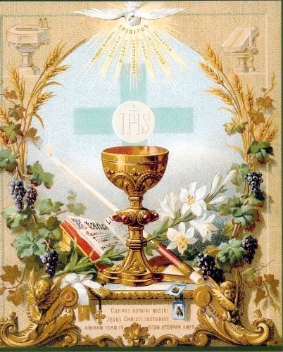
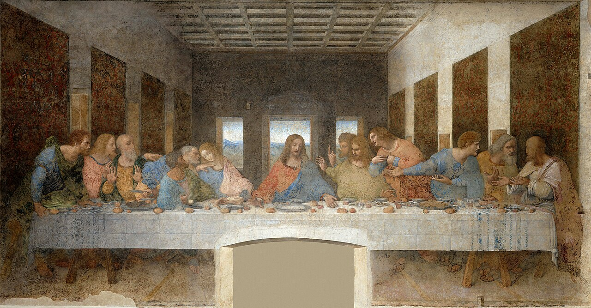

Ave Maria
Ave Maria, cheia de graça,
o Senhor é convosco,
bendita sois vós entre as mulheres
e bendito é o fruto do vosso ventre, Jesus.
Santa Maria, Mãe de Deus,
rogai por nós pecadores,
agora e na hora da nossa morte. Amém.
Tesouro de Orações e Memória dos Santos
O sacramento da Eucaristia completa a iniciação cristã, isto é, aqueles que receberam o Batismo e a Confirmação e, portanto, são membros da Igreja e se deixam configurar a Cristo pelo Seu Espírito, podem por meio da Eucaristia ter participação no próprio sacrifício do Senhor, juntamente com a comunidade dos fiéis.
Instituído por Jesus na Última Ceia, a Eucaristia é “o sacrifício eucarístico do seu corpo e sangue”, o memorial contínuo de Sua morte e ressurreição confiado à Igreja, Sua esposa, até que Ele volte. A Eucaristia é, ao mesmo tempo, a fonte e o cume de toda a vida cristã. Os outros sacramentos estão em função deste, pois “na santíssima Eucaristia está contido todo o tesouro espiritual da Igreja, isto é, o próprio Cristo, nossa Páscoa.” A Eucaristia é o ápice da ação pela qual Deus santifica o mundo e da adoração oferecida a Cristo e ao Pai.
Tamanha é a riqueza deste mistério que muitos nomes podem fazer referência à Eucaristia. Entre eles, Ceia do Senhor, Fração do Pão, Comunhão, Santo Sacrifício, e outros, cada um revelando uma dimensão única do mistério deste sacramento. Além disso, a maneira como Cristo está presente nas espécies eucarísticas é única e isso eleva a Eucaristia acima de todos os outros sacramentos e a torna o ápice da vida espiritual e o objetivo para o qual todos os sacramentos apontam.
“No santíssimo sacramento da Eucaristia estão contidos, verdadeira, real e substancialmente, o corpo e o sangue, conjuntamente com a alma e a divindade de nosso Senhor Jesus Cristo e, por conseguinte, Cristo completo” Por isso, essa presença é chamada de “real” — não porque as outras presenças não sejam reais, mas porque é a presença substancial de Cristo, Deus e homem, de maneira única e completa.

“A comunhão diária não pode conviver com o desejo de aparecer, vaidade no vestir, prazeres da gula, comodidades, conversas frívolas e maldosas. Exige oração, mortificação, recolhimento”.
“Ficai certos de que todos os instantes da vossa vida, o tempo que passardes diante do Divino Sacramento será o que vos dará mais força durante a vida, mais consolação na hora da morte e durante a eternidade”. - Santo Afonso de Ligório.
Pai dos monges do Ocidente e patriarca da Ordem Beneditina. Escreveu a célebre Santa Regra ("Ora et Labora"), destacando-se pela luta espiritual, discernimento e a oração contínua contra as ciladas do inimigo.
Fundador da Companhia de Jesus (Jesuítas) e autor dos célebres "Exercícios Espirituais". Mestre do discernimento de espíritos e da busca constante de em tudo amar e servir à Maior Glória de Deus (ADMG).
Príncipe da milícia celeste e guardião fidelíssimo do povo de Deus. Seu nome é um brado de lealdade: "Quem como Deus?" ("Quis ut Deus?").

A Última Ceia, pintada entre 1495 e o início de 1498, é considerada talvez a pintura mural mais importante do mundo, "uma coisa bela e maravilhosa", como escreveu Giorgio Vasari em suas Vidas dos Mais Excelentes Pintores, Escultores e Arquitetos, obra na qual menciona Leonardo da Vinci e descreve a Última Ceia.
Pintor, arquiteto, escultor, engenheiro, inventor, matemático, anatomista e escritor, Leonardo da Vinci personificou o ideal do homem multifacetado almejado pelo Renascimento italiano.
A Última Ceia oferece talvez o testemunho mais completo de seu gênio multifacetado, sua ânsia de experimentar e sua curiosidade inesgotável. No período em que trabalhava na pintura, na última década do século XV, Leonardo também se dedicava a estudos sobre luz, som, movimento e emoções humanas e suas expressões. Encontramos esses interesses refletidos na Última Ceia, na qual, talvez mais do que em qualquer outra obra, Leonardo demonstra sua preocupação em retratar o que chamava de “movimentos da alma” por meio de posturas, gestos e expressões.

A abóboda da capela foi pintada entre 1508 e 1512 pelo artista renascentista Michelangelo Buonarroti a pedido do papa Júlio II. O pontífice desejava mudar a decoração da igreja, anteriormente adornada com estrelas douradas em um fundo azul.
Michelangelo se planejou bastante antes de iniciar a execução do projeto, dedicando um ano na preparação dos desenhos.
O artista era admirador do estilo chamado horror vacui - que vem do latim e significa "temor ao vazio" - e preencheu todos os espaços da abóboda com temas bíblicos.
Espaço reservado para links do YouTube/Spotify de cantos gregorianos e hinos sacros.
Espaço reservado para os escritos, Suma Teológica, Confissões e livros recomendados.